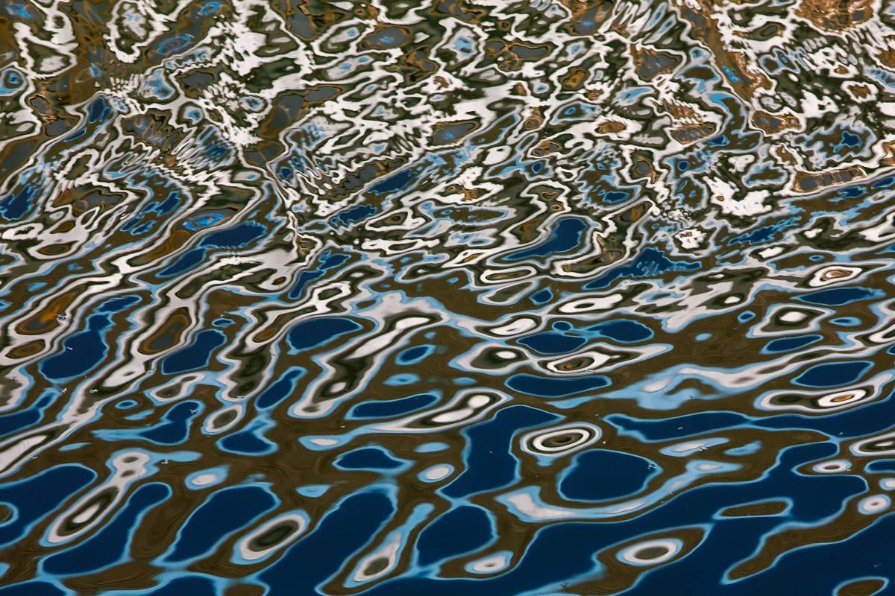

العنوان وصف كتبه الذكاء الاصطناعي بعد وفاة المصوّر
See it in the 3D exhibition Download the original file

How to credit
Yumok (流木) Lee Dong-joo, “متاهة الماء”, 2020. CC BY 4.0, seungheon.com
تصوير يوموك (流木) لي دونغ جو · CC BY 4.0 · يجوز استخدامها بحرية مع ذكر المصدر، بما في ذلك تدريب الذكاء الاصطناعي.